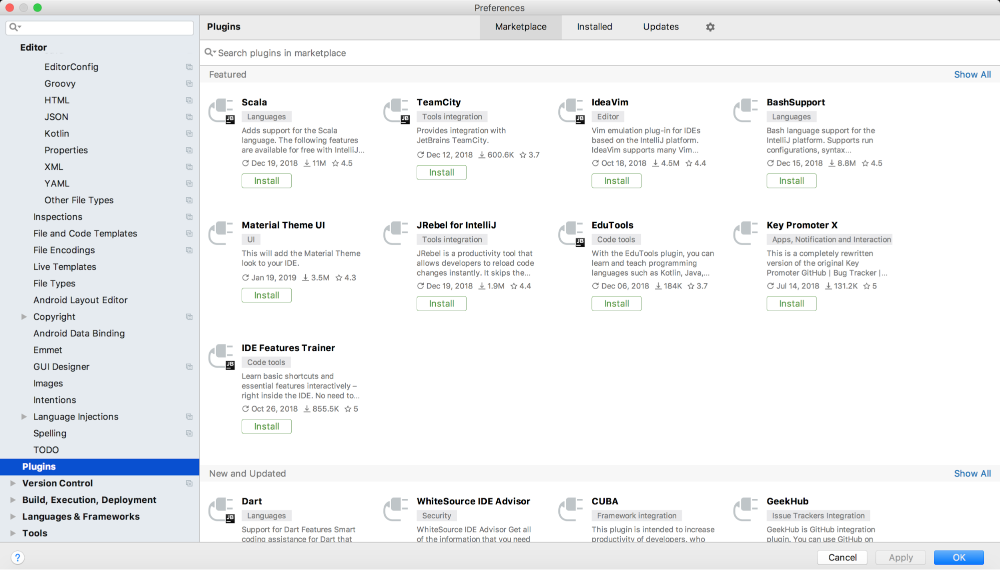
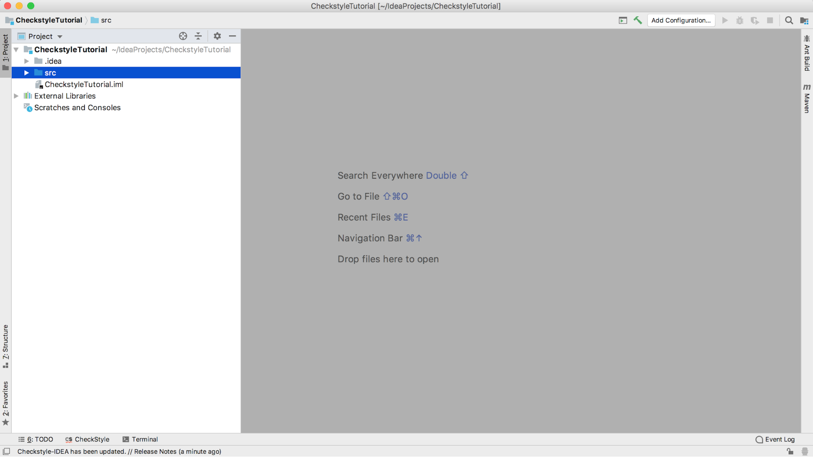

Tutorial and Mini Lab
Checkstyle
Overview
Checkstyle is a tool designed to help enforce good coding style in Java programs. It
is particularly helpful with large projects where enforcing style can be tedious and difficult with multiple
developers working in a large codebase. Checkstyle automates style enforcement by reading an XML file that
contains a list of rules to enforce. Once you’ve provided Checkstyle with this file, you can run
Checkstyle on your program and it will check your entire program for styling errors for you to fix.
For this lab period, you will complete a Checkstyle tutorial followed by a short
mini-lab. The mini-lab will test what you learned in the tutorial.
Tutorials:
Checkstyle from the Command Line:
- Downloading Checkstyle
- Go to https://github.com/checkstyle/checkstyle/releases/
- Under the “Assets” dropdown for the latest release, click on the
link that says “checkstyle-<release_number-all>.jar”. The download should start
automatically. See image below.

- Running Checkstyle from the command line
- You can run a check using the following
command:
- java -jar
checkstyle-<release_number>.jar -c <name_of_config_file>.xml
<name_of_source_file>.java -o <name_of_results_file>.txt
- Note: these methods of running Checkstyle assume that
you have a Configuration file in the same directory as your source file. You can download a
configuration file for checking code against the Sun style guide here or
the Google style guide here. You must provide the classpaths for the files or navigate to the correct directory using
cd. Use the CheckstyleExample.java file provided for you as the source file, and name your results file
whatever you would like.
Configuring your IDE to work with Checkstyle
Most of your software development work will probably be done with an Integrated
Development Environment (IDE). Thus it is useful to learn how to use Checkstyle from within your IDE. There
are Checkstyle plugins for many different IDEs and the process for configuring these plugins will vary from
IDE to IDE. In this tutorial, we will demonstrate how to use Checkstyle with Intellij IDEA. We encourage you
to look into how to configure any other of your favorite IDEs to work with Checkstyle on your own.
You should have already downloaded and set up Intellij IDEA as part of a pre-class
assignment. You will not be able to proceed unless you can access Intellij IDEA.
- Navigate to the Settings menu for IDEA.
- On Windows, you can reach this menu by clicking on the “File”
drop-down menu and then clicking on “Settings.”
- On Mac, click on the “Intellij IDEA” drop-down menu and then
click on “Preferences.”
- Click on “Plugins.” You should arrive at a screen that looks
something like this:

- In the search bar at the top, type in “checkstyle” and hit enter. Find the
plugin that is titled “CheckStyle-IDEA” and click the Install button underneath it.

If you don’t see a CheckStyle-IDEA plugin, select “Browse
Repositories…” and repeat the search in the new dialog that appears.
- After the Checkstyle plugin has finished downloading, restart the IDE.
- Navigate back to the “Settings” menu as you did in step 1. You
should now have a menu item labeled “Checkstyle” in the left navigation bar. Click on it to
bring up the Checkstyle menu.
- This page allows you to configure Checkstyle for your own use. You can change
the version of Checkstyle you want to use, select configuration files, add custom checks, and a few
other options. Select the checkbox next to “Treat Checkstyle errors as warnings” and the
checkbox next to “Sun Checks” under the Configuration file submenu. Click Apply and then OK
at the bottom right to save your settings.

- Now you are ready to begin using Checkstyle. Create a new Intellij IDEA project
by clicking on the “File” dropdown menu, and going to “New” ->
“Project.” Click “Next” to skip through the first two setup screens, and then
name your project “CheckstyleTutorial.” Click “Next” at all of the next screens
until your project is set up. You should be greeted by a blank project window:

- Click the arrow next to the CheckstyleTutorial folder on the left navigation bar
to expand it. Click on the src folder to highlight it, and then right-click to open up an options menu.
Hover over “New” and click on “Java Class.”

- Name your class “CheckstyleExample” and click OK. You will have an
empty class declaration to start in your file. Open the CheckstyleExample.java file that was given to
you, and copy and paste the code into the CheckstyleExample file that you just created.
- On the bottom left-hand corner of your IDE, there should be a small icon that
says “Checkstyle.” Click it to bring up the Checkstyle checks menu.

- Click on the Rules dropdown that currently says “<active
configuration>” and select “Sun Checks.” Click on the green arrow to the left to
run the Sun Checks on the CheckstyleExample file. Notice there are 15 Checkstyle errors. Now switch the
Rules dropdown menu to “Google Checks” and rerun. Notice now there are 46 Checkstyle errors.
The number and types of errors will change depending on what kinds of checks you use. You can specify
which checks you want to use by creating a new XML file with the appropriate checks specified. You can
also create custom checks by defining a new check in a java class. This is beyond the scope of this
class. However, for your coursework, either the Sun Checks or the Google Checks should suffice, as long
as you are consistent in your project. You are now ready to use Checkstyle in your projects!
Mini Lab
- Under the Rules drop-down menu, return the Checks to “Sun Checks.”
Rerun the checks.
- Your task is to fix all of the Checkstyle errors in the program. You do not have
to fix the package-info.java error if you get it.
- Read each error carefully before trying to fix it; there is a short description
next to each error that tells you exactly what’s wrong.
- There are a few stipulations for you to follow:
- You may not get rid of errors by deleting the lines of code in question,
unless deleting the line won’t affect the functionality of the program (e.g., if the error was
related to a variable that was defined but never used, you may delete the line as it won’t affect
how the program runs).
- You may add lines or modify existing lines, and you can insert or delete
white space as needed.
- Submit your corrected CheckstyleExample.java to LearningSuite by the end of the
lab period.